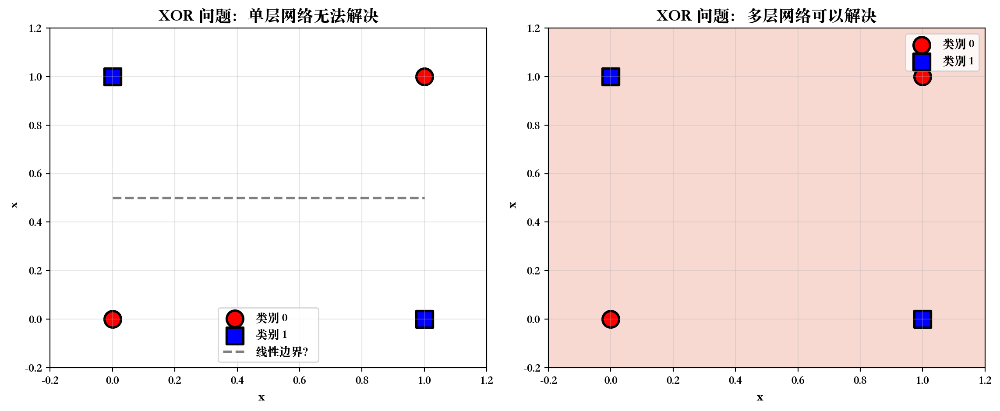
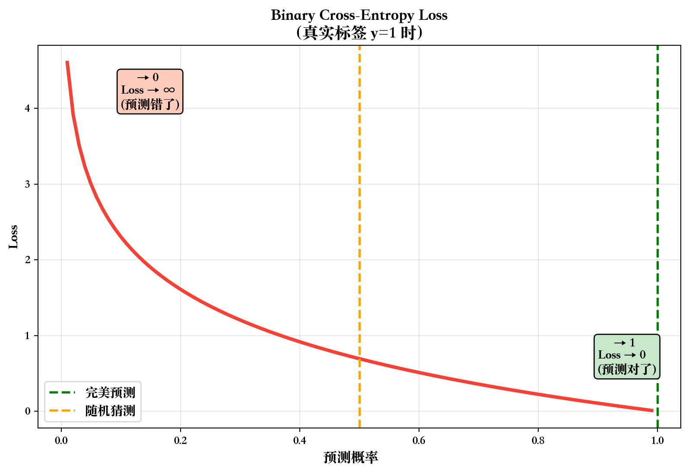

import matplotlib.pyplot as plt# 根据操作系统设置不同的字体import platform# 获取操作系统类型system = platform.system()# 设置 matplotlib 字体if system =='Windows': plt.rcParams['font.sans-serif'] = ['SimHei'] # Windows 使用黑体elif system =='Darwin': plt.rcParams['font.sans-serif'] = ['Songti SC'] # Mac 使用宋体else: plt.rcParams['font.sans-serif'] = ['WenQuanYi Zen Hei'] # Linux 使用文泉驿正黑# 解决负号显示问题plt.rcParams['axes.unicode_minus'] =False
9 开场：深度学习的神秘面纱
9.1 深度学习无处不在
你每天都在使用深度学习：
📱 手机人脸解锁
🗣️ 语音助手（Siri、小爱）
📷 拍照美颜
🚗 自动驾驶
💬 ChatGPT
问题：这些”黑科技”的底层原理是什么？
答案：神经网络
9.2 本周目标：揭开神秘面纱
9.2.1 知识目标
理解神经元的基本概念
理解多层感知机（MLP）的网络结构
了解常见激活函数（ReLU、Sigmoid、Tanh）
理解前向传播和反向传播的直觉
知道何时用树模型 vs 神经网络
9.2.2 技能目标
使用 Keras 搭建简单的 MLP
训练 MLP 并可视化学习曲线
在测试集上评估 MLP 的 AUC
调整网络结构（层数、神经元数量）
9.2.3 核心理念
深度学习不神秘
它是基于简单数学运算的累积
关键是”学习”：通过数据自动调整参数
不要被复杂的公式吓倒，先建立直觉！
10 第一部分：从生物到人工
10.1 1.1 生物神经元
10.1.1 人脑的神经网络
人脑约有 860 亿个神经元
每个神经元连接 数千到上万个其他神经元
通过电信号传递信息
学习 = 调整神经元之间的连接强度
10.1.2 生物神经元的结构
graph LR
A[树突<br/>Dendrites<br/>接收信号] --> B[细胞体<br/>Soma<br/>整合处理]
B --> C[轴突<br/>Axon<br/>输出信号]
C --> D[突触<br/>Synapse<br/>连接下一个神经元]
style A fill:#fff9c4
style B fill:#c8e6c9
style C fill:#bbdefb
style D fill:#ffccbc
关键过程：
树突接收多个输入信号
细胞体对信号进行加权求和
如果总和超过阈值，神经元”发火”（激活）
通过轴突传递信号给下一个神经元
10.2 1.2 人工神经元
10.2.1 数学模型
简化的神经元模型（1943年，McCulloch & Pitts）：
\[
y = f\left(\sum_{i=1}^{n} w_i x_i + b\right)
\]
组成部分：
\(x_i\)：输入信号（特征）
\(w_i\)：权重（连接强度）
\(b\)：偏置（阈值）
\(f\)：激活函数（决定是否”发火”）
\(y\)：输出
10.2.2 可视化人工神经元
graph LR
X1[x₁] -->|w₁| S((Σ))
X2[x₂] -->|w₂| S
X3[x₃] -->|w₃| S
B[+b] --> S
S --> F[激活函数<br/>f]
F --> Y[y]
style S fill:#fff9c4
style F fill:#c8e6c9
style Y fill:#4caf50,color:#fff
/var/folders/dh/sd70vd1d0jg1tkw7h3zwjqxr0000gn/T/ipykernel_37997/1535391376.py:48: UserWarning:
Glyph 8315 (\N{SUPERSCRIPT MINUS}) missing from current font.
/var/folders/dh/sd70vd1d0jg1tkw7h3zwjqxr0000gn/T/ipykernel_37997/1535391376.py:48: UserWarning:
Glyph 7611 (\N{MODIFIER LETTER SMALL Z}) missing from current font.
/Library/Frameworks/Python.framework/Versions/3.11/lib/python3.11/site-packages/IPython/core/pylabtools.py:170: UserWarning:
Glyph 8315 (\N{SUPERSCRIPT MINUS}) missing from current font.
/Library/Frameworks/Python.framework/Versions/3.11/lib/python3.11/site-packages/IPython/core/pylabtools.py:170: UserWarning:
Glyph 7611 (\N{MODIFIER LETTER SMALL Z}) missing from current font.
11.2.2 Sigmoid 详解
公式：
\[
\sigma(z) = \frac{1}{1 + e^{-z}}
\]
特点：
输出范围：(0, 1)
S 形曲线，平滑
可解释为概率
优点：
输出有界，稳定
适合二分类输出层
缺点：
梯度消失：当 \(|z|\) 很大时，梯度接近 0
计算成本高（指数运算）
使用场景：
✓ 二分类问题的输出层
✗ 隐藏层（已被 ReLU 取代）
11.2.3 ReLU 详解
公式：
\[
\text{ReLU}(z) = \max(0, z) = \begin{cases}
z & \text{if } z > 0 \\
0 & \text{if } z \leq 0
\end{cases}
\]
/var/folders/dh/sd70vd1d0jg1tkw7h3zwjqxr0000gn/T/ipykernel_37997/3615795970.py:39: UserWarning:
Glyph 8321 (\N{SUBSCRIPT ONE}) missing from current font.
/var/folders/dh/sd70vd1d0jg1tkw7h3zwjqxr0000gn/T/ipykernel_37997/3615795970.py:39: UserWarning:
Glyph 8322 (\N{SUBSCRIPT TWO}) missing from current font.
/Library/Frameworks/Python.framework/Versions/3.11/lib/python3.11/site-packages/IPython/core/pylabtools.py:170: UserWarning:
Glyph 8322 (\N{SUBSCRIPT TWO}) missing from current font.
/Library/Frameworks/Python.framework/Versions/3.11/lib/python3.11/site-packages/IPython/core/pylabtools.py:170: UserWarning:
Glyph 8321 (\N{SUBSCRIPT ONE}) missing from current font.

12.3.2 多层的威力：层次特征学习
graph TD
A[图像识别例子] --> B[第1层<br/>检测边缘]
B --> C[第2层<br/>检测形状]
C --> D[第3层<br/>检测物体部件]
D --> E[第4层<br/>识别完整物体]
style B fill:#fff9c4
style C fill:#c8e6c9
style D fill:#bbdefb
style E fill:#4caf50,color:#fff
关键洞察：
浅层：学习简单特征（边缘、纹理）
深层：学习复杂特征（组合模式）
这是自动特征工程！
12.3.3 层数选择建议
数据量
推荐层数
原因
< 1万
1-2 层隐藏层
数据少，深层易过拟合
1万-10万
2-3 层隐藏层
中等复杂度
> 10万
3-5 层隐藏层
大数据支持深层网络
> 100万
5+ 层
需要特殊技巧（下周讲）
经验法则：
从简单开始（2层）
如果欠拟合，增加层数或神经元数
如果过拟合，减少复杂度或使用正则化（下周讲）
13 第四部分：前向传播与反向传播
13.1 4.1 前向传播（Forward Propagation）
13.1.1 从输入到输出的信息流
graph LR
A[输入<br/>x] --> B[隐藏层1<br/>h₁ = ReLU W₁x+b₁]
B --> C[隐藏层2<br/>h₂ = ReLU W₂h₁+b₂]
C --> D[输出<br/>ŷ = σ W₃h₂+b₃]
style A fill:#fff9c4
style B fill:#c8e6c9
style C fill:#bbdefb
style D fill:#4caf50,color:#fff
/Library/Frameworks/Python.framework/Versions/3.11/lib/python3.11/site-packages/IPython/core/pylabtools.py:170: UserWarning:
Glyph 375 (\N{LATIN SMALL LETTER Y WITH CIRCUMFLEX}) missing from current font.

13.3 4.3 反向传播（Backpropagation）
13.3.1 核心思想（不讲数学细节）
问题：如何调整 W 和 b 来降低 Loss？
方法：计算 Loss 对每个参数的”贡献”（梯度）
graph RL
A[Loss] --> B[∂Loss/∂W₃<br/>∂Loss/∂b₃]
B --> C[∂Loss/∂W₂<br/>∂Loss/∂b₂]
C --> D[∂Loss/∂W₁<br/>∂Loss/∂b₁]
style A fill:#f44336,color:#fff
style B fill:#ffccbc
style C fill:#fff9c4
style D fill:#c8e6c9